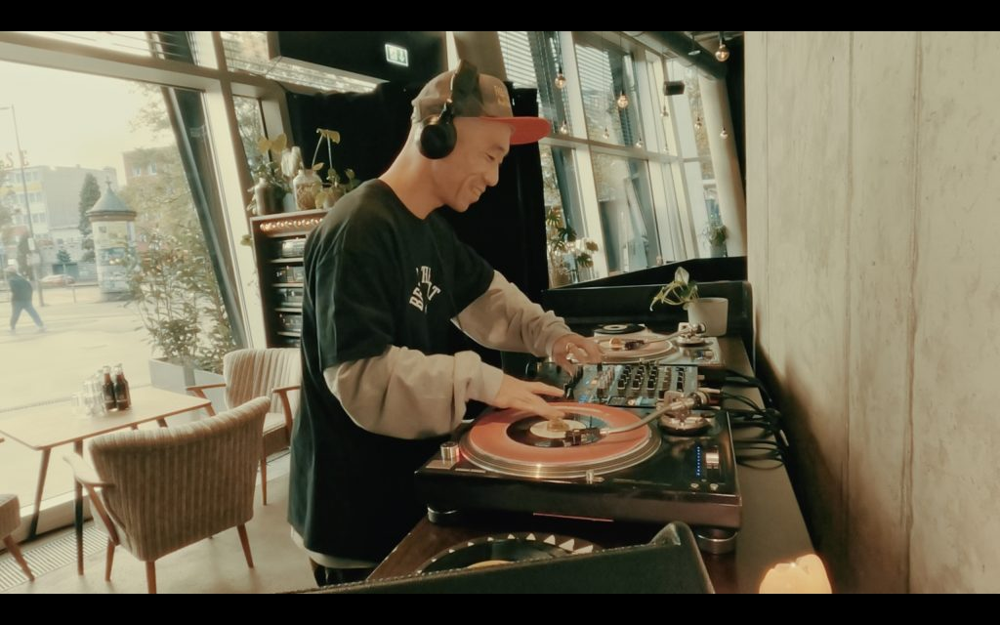

Independent radio. Filipino roots.
Local roots.
Global rhythm.
Underground hip-hop, soulful cuts, and your next discovery.
From theKanto.To the world.
Underground hip-hop, soulful selections, and fresh discoveries. Rooted in Filipino community. Connected through music.
Notes from the underground
Kanto Dispatch
Filipino roots. Worldwide ears. Releases, discoveries, and the scenes moving music forward.
Out of the headphones. Into the city.
Kanto Events
Philippine hip-hop gigs, cyphers, beat showcases, and hip-hop DJ nights, checked against official sources. Independent listings, not Urban Kanto productions. Always check the organizer for changes. Promoting a show? Send us the date, venue, lineup, official link, and poster. Submissions are reviewed before listing.

Featured selector / Tokyo, Japan
DJ KOCO
aka SHIMOKITA.
Small records. Heavy skills. A hip-hop approach to 7-inch vinyl, connecting funk, soul, and deep crate discoveries through sharp cuts and inventive mixing.
Explore DJ KOCO ↗ (official links, new tab)UKR editorial pick · Artist profile ↗ (new tab)
Your corner.
Your sound.
The kanto is where people stop, swap stories, and pass along a record. Bring a story, suggest an artist, or take a guest turn behind the decks.
In the Philippines, the kanto is the corner where neighbors gather: a place to trade stories, share food, and hear something new coming from a speaker down the block.
Urban Kanto Radio is an independent online station built on that idea. We play underground hip-hop, soul, jazz, R&B, and the DJ sets that connect them, and we welcome listeners from every city.
Music first. Community always. Built for curious ears, wherever you call home.